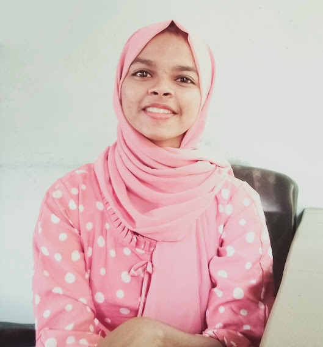

-About me

I'm Farisha KR,
I'm an enthusiastic B.Tech Computer Science undergraduate aspiring to become a web developer. Because of good web development, we can control the user experience, manage content relevancy, and more. That's why I'm curious to learn more about it.
I am currently managing the position of design lead at Hackclub KMEA. Besides, a member of tinkerhub community. I believe a dream does not become reality through magic; it takes sweat, determination, and hard work.
-My vision for webLearn'21 Bootcamp
I know nothing is more expensive than a missed opportunity. So, It is a golden opportunity for me to improve my skills in web development. As a computer science student, having technical knowledge and being updated about the latest technology is really crucial. It can't be obtained in a single night. But can be improved by practicing and taking new tasks.
That's why I joined WebLearn'21 Bootcamp. Because I love to explore things related to tech